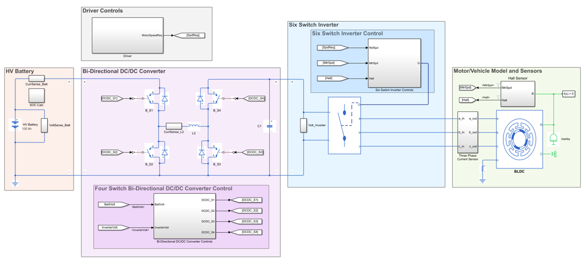
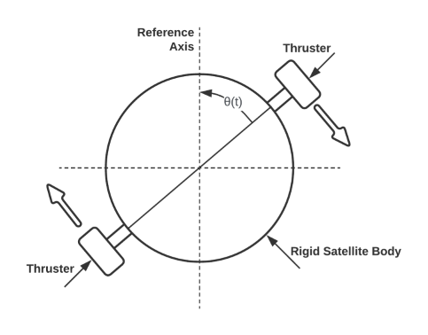

Hello, my name is Greg.
I am a senior software engineer currently working in the automotive industry for General Motors. My career has focused on control software development for battery electric vehicles - with a strong focus in hardware and software integration, test, and validation.
I have a passion for learning, creating, and houseplants. To see a snapshot of my capabilities - from personal or academic projects - check out the Selected Work section below.
Skills Snapshot
MATLAB/Simulink C++ Python Vehicle Spy dSPACE Software Suite CAN LIN Automotive Ethernet Jupyter Notebook Fusion 360 Agile Development GIT & GitHub
Selected Work
Personal projects built to expand my knowledge and capability beyond my direct work area. Includes academic projects completed during graduate school, and side projects for my own enjoyment and learning.

NASA Exoplanet Watch - Citizen Science
Contributor to NASA’s Exoplanet Watch program, turning raw telescope images into transit light curves that refine exoplanet orbital timing. I built a locally hosted web application around the EXOTIC reduction pipeline that ingests raw MicroObservatory and checked-out .FITS data, automates star chart coordinate matching with user confirmation, and produces publication-ready light curve charts. All results are published to the AAVSO Exoplanet Database under observer code EGRA.
Stack: Python, Pandas, EXOTIC Reduction Analysis
Result: ... observations published to AAVSO
AAVSO contributions in the Exoplanet Database...

Regenerative Braking Control Method
Analysis of six-switch inverter control strategies for recovering braking energy with a brushless DC motor. I built an electromechanical model in MATLAB/Simulink and used it to compare inverter switching approaches for regenerative braking.
Stack: MATLAB, Simulink, SimScape
Read the Regenerative Braking report here...

Satellite Attitude Control System
Design and analysis of a PID-based attitude controller for orienting a satellite relative to a reference. The study compares open- and closed-loop response and evaluates the controller’s stability and noise rejection.
Stack: MATLAB, Simulink, PID control design
Read the Satellite Attitude Control report here...
3D Modeling & Printing
I enjoy being able to take ideas from conception to reality, which makes 3D printing a very rewarding hobby. All of the prints shown here are modeled by myself using AutoDesk Fusion360. Check out the Printables links for more information.